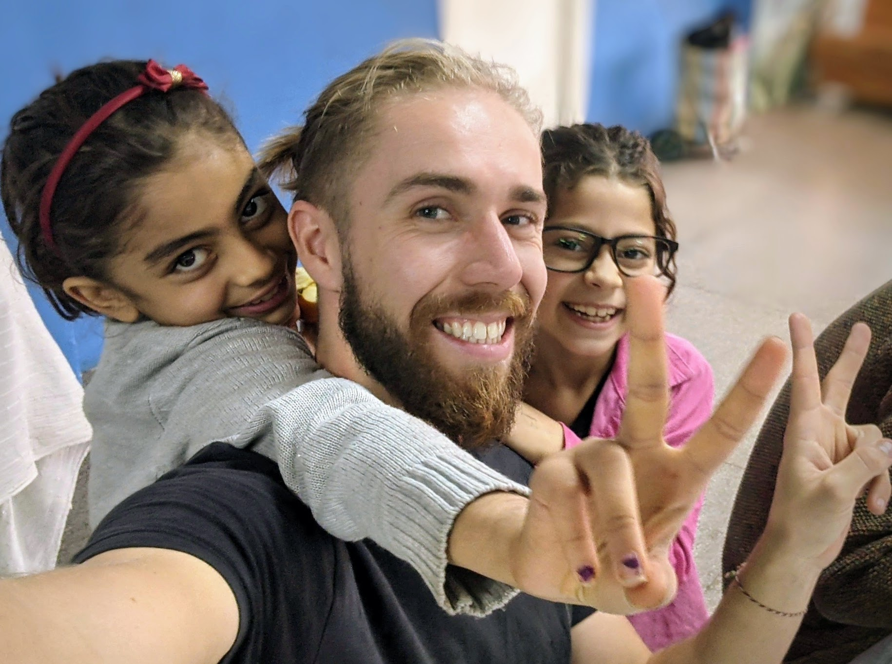

Home
A Global Citizen...

I'm a curious individual who, after achieving a distinction in 'MSc Political Economy of Emerging Markets' from King's College London in 2018, traveled, worked and volunteered in over 30 countries.
During this time, I experienced various cultures, built successful data science and editing portfolios by collaborating with clients and indulged in my additional passions of photography and writing.
Data Science


Editing


Photography
Apr 2023 - Jan 2024
Northern-Europe

Nov 2021 - Apr 2023
Middle-East